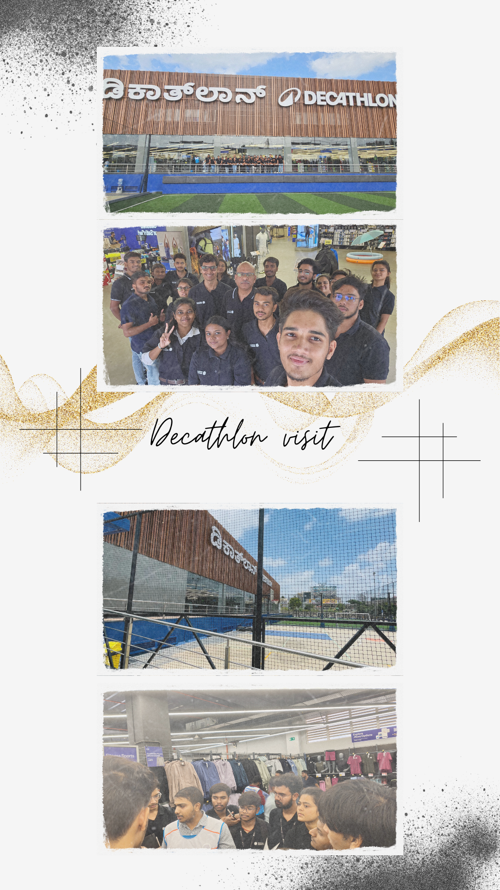

.jpg)
SOM Decathlon Visit

In the visit to Decathlon, our students had the opportunity to gain firsthand exposure to the strategies and operations of a global sports retail leader. The immersive experience offered valuable insights into how Decathlon blends innovation, sustainability, and customer-centricity to redefine retail.
The PW Prerna initiative emphasizes the importance of understanding students’ individual strengths and supporting their growth with confidence, even in the face of challenges.
Students explored Decathlon’s Second Life Bazaar, where pre-owned sports products are expertly refurbished and resold. This initiative not only promotes circular economy principles but also makes quality sports equipment accessible to a wider audience, reinforcing Decathlon’s commitment to environmental responsibility.
The store’s dynamic merchandising approach—regularly adjusting product displays to reflect seasonal trends and customer demand—demonstrated how data-driven planning can optimize sales and enhance the shopping experience.
Students observed Decathlon’s unique organizational culture, where managers are referred to as “leaders.” This flat hierarchy fosters open communication, collaboration, and a sense of ownership among team members.
The visit included a tour of “Anubhava,” Decathlon’s experience centre, where students saw demo products from other brands. These products, showcased for educational purposes and not for sale, comply with Indian retail regulations and further enrich the customer experience.
This industry visit gave PW Institute of Innovation School of Management students a comprehensive understanding of contemporary retail strategies, blending sustainability, innovation, and customer engagement—key lessons for future leaders in India’s evolving EdTech and retail landscape.
In the visit to Decathlon, our students had the opportunity to gain firsthand exposure to the strategies and operations of a global sports retail leader. The immersive experience offered valuable insights into how Decathlon blends innovation, sustainability, and customer-centricity to redefine retail.
The PW Prerna initiative emphasizes the importance of understanding students’ individual strengths and supporting their growth with confidence, even in the face of challenges.
Students explored Decathlon’s Second Life Bazaar, where pre-owned sports products are expertly refurbished and resold. This initiative not only promotes circular economy principles but also makes quality sports equipment accessible to a wider audience, reinforcing Decathlon’s commitment to environmental responsibility. The store’s dynamic merchandising approach—regularly adjusting product displays to reflect seasonal trends and customer demand—demonstrated how data-driven planning can optimize sales and enhance the shopping experience. Students observed Decathlon’s unique organizational culture, where managers are referred to as “leaders.” This flat hierarchy fosters open communication, collaboration, and a sense of ownership among team members. The visit included a tour of “Anubhava,” Decathlon’s experience centre, where students saw demo products from other brands. These products, showcased for educational purposes and not for sale, comply with Indian retail regulations and further enrich the customer experience. This industry visit gave PW Institute of Innovation School of Management students a comprehensive understanding of contemporary retail strategies, blending sustainability, innovation, and customer engagement—key lessons for future leaders in India’s evolving EdTech and retail landscape.
Sports Event

June 6th was a high-energy day on campus, packed with competition, cheering, and great team spirit.
The much-awaited Badminton and Cricket Tournaments saw enthusiastic participation, bringing students together in the true spirit of sport.
The badminton courts were full of action, with 80 players competing in singles matches.
The games were intense and exciting to watch. In the men’s category, Manas Shukla (SOT23B1) and Alok Kumar (SOT24B1) took the top spots, while Shreya Tiwari (SOM24B1) and Nandini Bias (SOT24B1) won in the women’s finals with impressive performances.
Over on the cricket ground, four teams played some nail-biting matches. Team Warriors came out on top and also earned a special bonus match—an exhibition game against the employees’ team, which added a fun and memorable twist to the day.
A big part of the day’s success goes to Sports Club President Abhyudaya (SOT23B1), whose efforts made sure everything ran smoothly and everyone felt involved.
From smashing shots to big sixes, the tournaments were a celebration of student energy, teamwork, and the lively campus vibe we’re all proud of.
AWS Hackathon

The collaboration with AWS played a key role in making the hackathon a high-energy, high-impact event, drawing in over 600 student participants.
AWS mentors were present throughout, offering real-time feedback, technical support, and guidance.
Their presence made a real difference—especially for students working with cloud tools for the first time.
Our students also got hands-on with AWS PartyRock, a rapid prototyping tool that allowed them to experiment, build fast, and bring their ideas to life using real-world tech.
Beyond just competition, the AWS partnership added excitement, credibility, and a strong learning experience. For many students, it wasn’t just about winning—it was about learning from experts, trying something new, and walking away with valuable skills.
Under 25 Summit
What happens when creativity, ambition, and campus energy collide? The Under 25 Summit showed our students exactly that.
Organized by the Cultural Club at PW Institute of Innovation, the much-awaited event brought the campus together for an evening full of expression, inspiration, and vibrant performances.
The event kicked off with stand-up comedy, filling the auditorium with laughter and setting the tone for the night.
Next came live music performances by student bands that had the crowd cheering and swaying to the beat.
A session with a young entrepreneur gave students a glimpse into the world of startups, offering practical advice and real-world insights.
The student talent showcase featured dance, drama, poetry, and art—celebrating the diverse talents that make our campus community so unique.
With enthusiastic participation, inspiring guests, and strong support from faculty, the Under 25 Summit wasn’t just an event—it was a reflection of the spirit and passion that define student life at PW IOI.
Power BI & SQL Mini Event

"The campus was buzzing during the Power BI and SQL competition as students took on a fast-paced 2.5-hour challenge designed to reflect real business problems. Armed with raw datasets, our students had to write SQL queries, create dashboards in Power BI, and put together reports that made sense of the numbers. It wasn’t just about getting the right answers—it was about telling the story behind the data. Judges looked for accuracy, clean dashboards, and insights that actually meant something. And our students delivered—combining logic, creativity, and presentation to tackle complex scenarios like true data professionals. More than a competition, it was a glimpse into how data can drive decisions—and how ready our students are to take that challenge head-on."
Menstrual Awareness Drive

On June 22, the Social Welfare Club – Ehsaas, in collaboration with Need Base India, hosted a Menstrual Awareness Campaign at PW IOI. Aimed at girls aged 9–18, the event focused on open conversations around menstrual hygiene, health, and self-care. Led by Club President Harish Kumar, the sessions helped break taboos through honest discussions and fun post-lunch activities that made everyone feel included and heard. The best part? The entire drive was student-funded—with support from friends, institute staff, and the Kusumita Foundation. A true example of students stepping up to lead change where it matters.